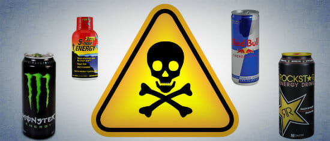

Mediterranean diet: Foods to eat, health benefits and how to get started |
|
The Mediterranean diet is a well-researched way of eating that can help improve overall health. It focuses on whole, plant-based foods and healthy fats. These are scientifically proven to reduce the risk of chronic conditions like heart disease. |
Bad eating habits: When, what and how often you eat matters |
|
When it comes to eating, everyone has different habits. Some of us enjoy three meals a day, while some of us would rather enjoy little snacks and meals spread throughout the day. Additionally, we also must compete with the demands of our everyday lives affecting our meals. You might work two jobs and take care of children when you get home. Maybe you have a fixed schedule some days, but other days, a more unpredictable one. Those situations will affect the way we eat, and at times, will push us to pick up bad eating habits. These can include eating close to bedtime, skipping meals, eating too fast, mindless eating, or stress eating. |
How do energy drinks affect your health? |
|
Many people enjoy energy drinks for that quick boost of energy they provide. However, these drinks can have some negative impacts on your health and heart. Energy drinks are very easy to get, and many people drink them without thinking about how they might affect their health. With the rise in popularity of these drinks, knowing about these potential heart risks is important. This is especially true for people with heart problems or high blood pressure. |